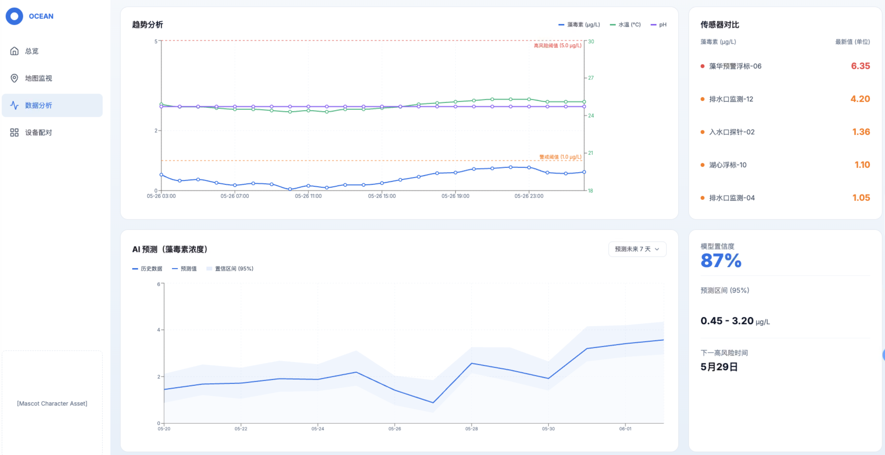
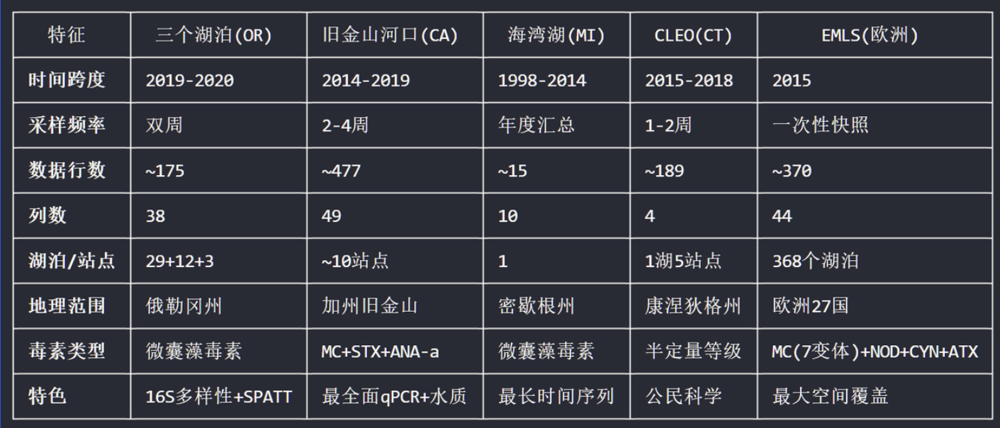
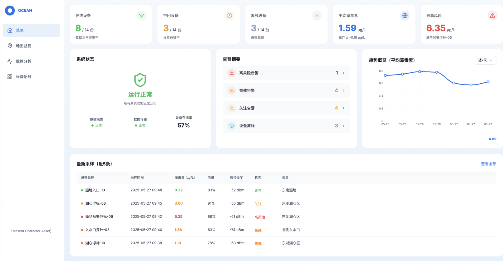
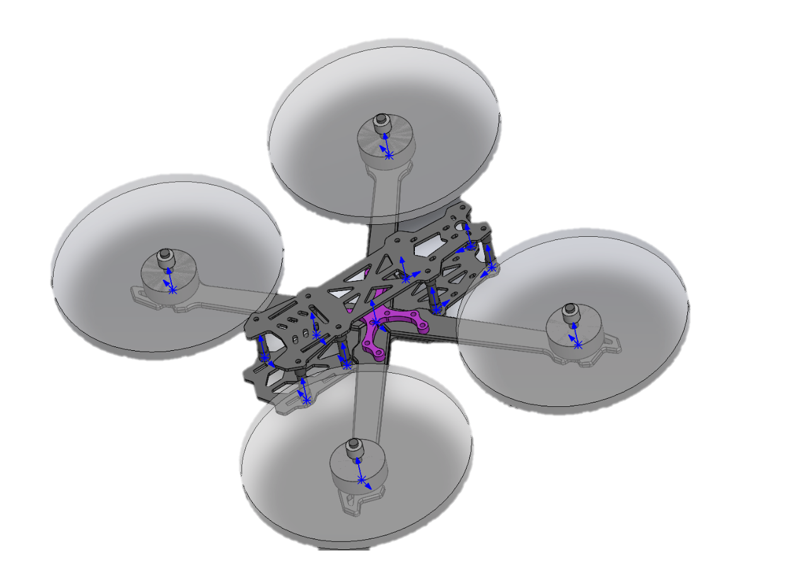
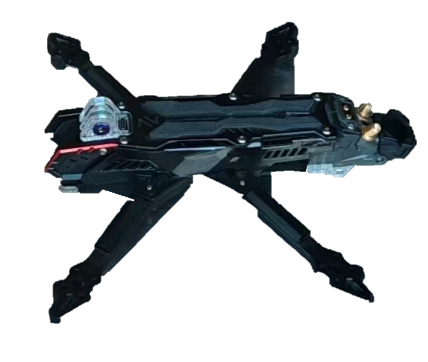
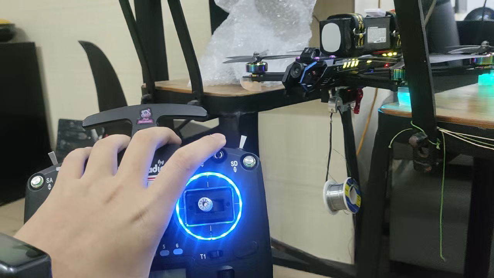
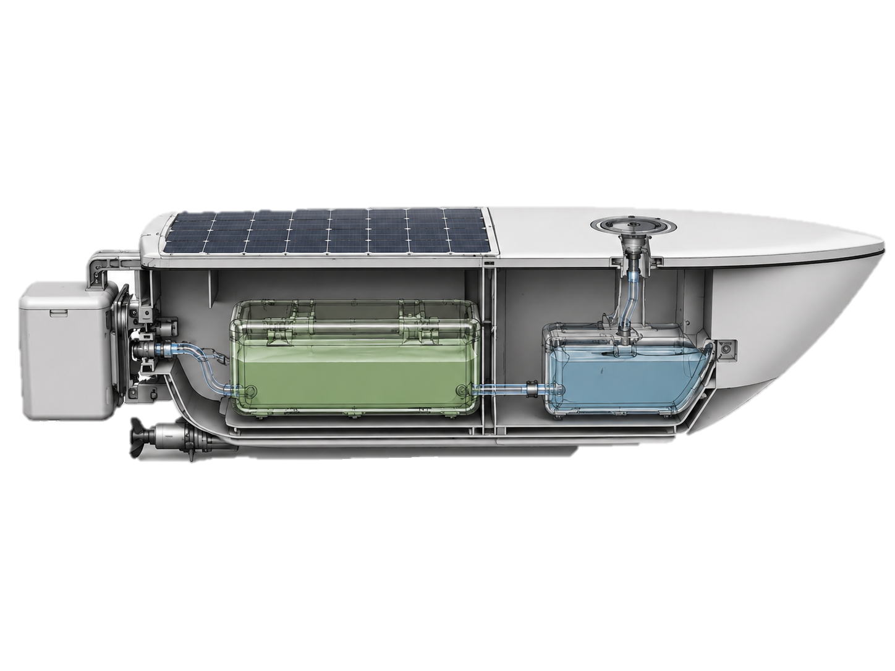
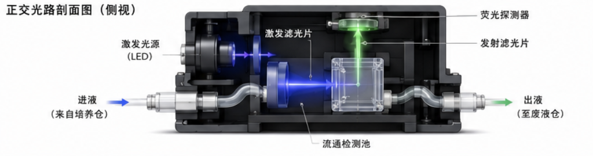

Step 1
Sampling
Water is drawn into the detection chamber on a scheduled cycle.
Hardware
The hardware page presents the proposed system as a field-facing monitoring loop: sample, detect, upload, analyze, warn, and respond.

Platform
The source material shows a platform interface with real-time map monitoring, data analysis, system overview, and collected water-quality data. In this prototype, the platform is described as the information layer that turns sensor signals into actionable monitoring status.
A final page should add screenshots with real data, explain data fields, and describe how warning levels are calculated.



Response
The supplied material proposes drone deployment after concentration warnings. It describes first-generation and second-generation drone concepts and frames deployment as a follow-up action rather than a standalone device.
Because field-release and biosafety evidence are not supplied, this generated page presents the drone as a concept requiring future validation.




Device
The boat is described as an unmanned mobile platform with 4G communication and separate functional compartments for culture, detection, and waste-liquid handling.
The project material frames the boat as part of a distributed monitoring network that can reduce manual sampling load and expand coverage.
Detection chamber
The detection-chamber material describes scheduled sampling, a membrane outlet designed to prevent engineered-bacteria leakage, fluorescence ratio calculation, standard-curve conversion, cloud upload, and waste-liquid storage.
Step 1
Water is drawn into the detection chamber on a scheduled cycle.
Step 2
Fluorescence ratio is measured and converted to concentration through a standard curve.
Step 3
Data are sent to the cloud platform for monitoring and warning.

Containment
The chamber concept includes waste-liquid handling and an outlet membrane. These details are important because environmental monitoring hardware must be designed around containment, not only measurement.
The final iGEM hardware page should include diagrams, CAD files, operation parameters, and test results once they are verified.
Content pending
These items are not available in the current verified materials.